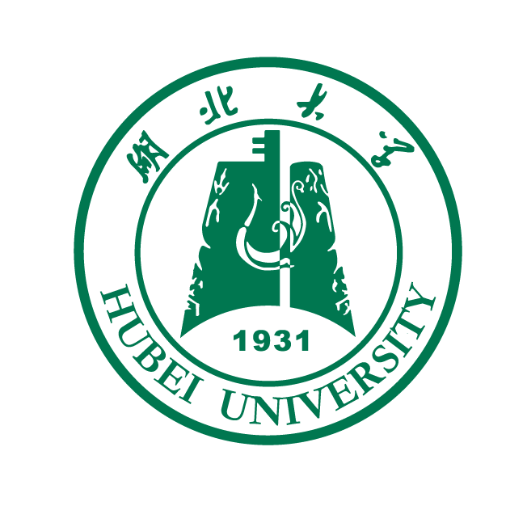
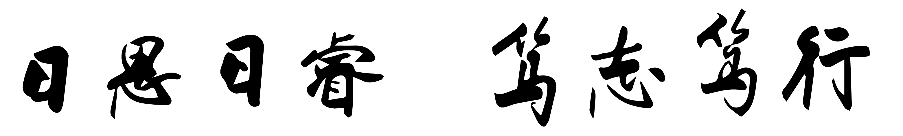

— 浅色模式 —
湖北大学
工作区 · 项目A
会话 1
会话 2
工作区 · 项目B
会话 3
你好，这是主题插件的浅色效果示例。护眼淡绿配色，右侧校徽水印，底部校训横匾。
悬浮球显示校标，点击可查看 DeepSeek 余额。


— 深色模式（松针绿）—
湖北大学
工作区 · 项目A
会话 1
会话 2
工作区 · 项目B
会话 3
深色模式为柔和低饱和的松针绿，校徽/校训自动转为白色剪影，正文柔和米白不刺眼。
悬浮球在深色下同样变为白色校徽。